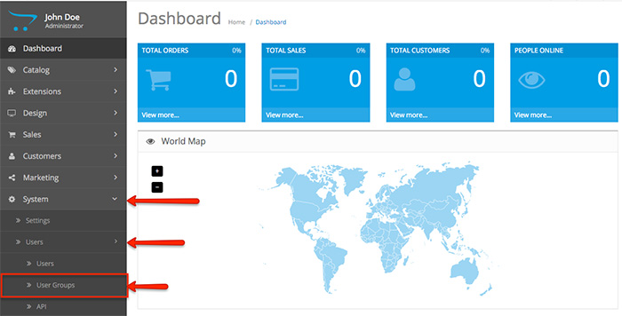
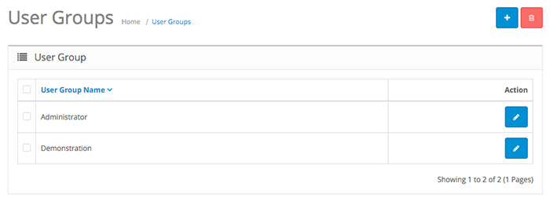
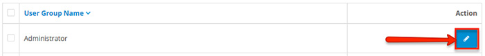
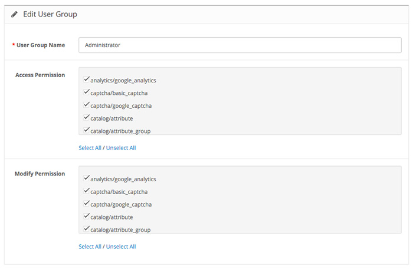
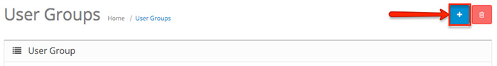
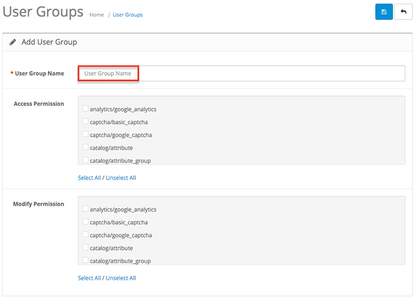

As an Administrator, OpenCart allows you to use the User Groups section to set the permissions and access of the user profiles. You can access it from your Dashboard by clicking on System > Users > User Groups:

In the User Groups section, you can create groups and determine which admin pages can be viewed and modified by each group. Note that you must know which pages can be accessed or modified with the Access and Modify permissions.

You have two pre-defined user groups in your default OpenCart installation - Administrator and Demonstration. While the Administrator group has all the permissions, the Demonstration group has none. You can delete both of these groups and create new ones. Click on the Action button for one of the user groups to see the permission fields.

The Edit User Group section gives you two main fields - Access Permission and Modify Permission. Respectively, the Administrator user group has all the access and modifying permissions. However, users assigned to the Demonstration group will have no permissions to access or modify any of the Admin panel pages.

If you decide that a certain user group should not have modifying permissions, simply remove the ticks from the categories you wish to prevent from being modified.
For example, analytics/google_analytics refers to the Analytics section in the Category menu of your OpenCart Dashboard. The same goes for all the rest - they are the Admin panel pages of your online store and you can decide which group has the rights to view or modify each of the pages.
Scroll down in each field to see all of the Admin panel pages that you can give and take away permissions for.
To create a new user group, go back to the main User Groups section and click on the Add New button on the top right side.

After you assign a User Group Name, you will see that you can setup the permissions right away, while you are opening a new user group.

To learn how to assign users to user groups, see the Users documentation page for more information.